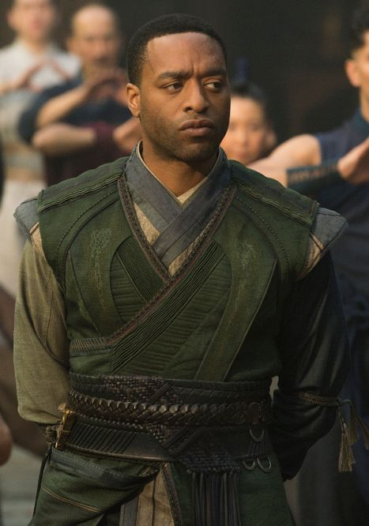
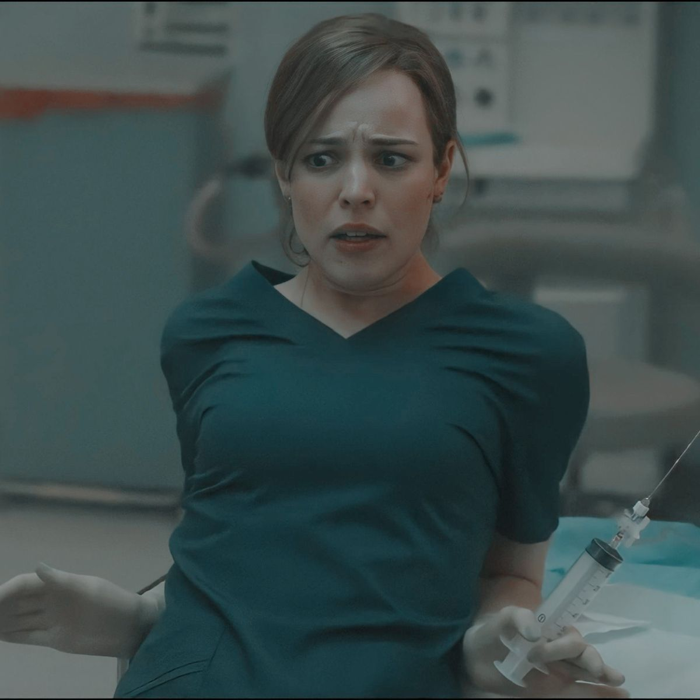

PERSONAJES PRINCIPALES
ANCESTRAL
 Es la Hechicera Suprema y mentora de Strange. De origen misterioso y con siglos de vida, posee un conocimiento infinito sobre las artes místicas. Es quien guía a Stephen en su camino espiritual y le enseña que la realidad es mucho más de lo que sus ojos pueden ver.
Es la Hechicera Suprema y mentora de Strange. De origen misterioso y con siglos de vida, posee un conocimiento infinito sobre las artes místicas. Es quien guía a Stephen en su camino espiritual y le enseña que la realidad es mucho más de lo que sus ojos pueden ver.
WONG
 El bibliotecario de Kamar-Taj y protector de los libros de hechizos más antiguos y peligrosos. A diferencia de Strange, Wong es serio, disciplinado y muy estricto con las reglas. Se convierte en un aliado fundamental y en el compañero de batalla más leal de Stephen.
El bibliotecario de Kamar-Taj y protector de los libros de hechizos más antiguos y peligrosos. A diferencia de Strange, Wong es serio, disciplinado y muy estricto con las reglas. Se convierte en un aliado fundamental y en el compañero de batalla más leal de Stephen.
KARL MORDO

Un maestro de las artes místicas y uno de los alumnos más destacados de Ancestral. Al principio ayuda a Strange en su entrenamiento y combate a su lado, pero su visión rígida de la moral y las leyes de la naturaleza lo llevan a cuestionar los métodos de sus maestrosKAECILIUS
 El antagonista de la historia. Es un antiguo discípulo de Ancestral que se sintió traicionado por ella. Forma a los "Fanáticos" con el objetivo de contactar a Dormammu y fusionar la Tierra con la Dimensión Oscura, creyendo que la inmortalidad es el único camino hacia la paz.
El antagonista de la historia. Es un antiguo discípulo de Ancestral que se sintió traicionado por ella. Forma a los "Fanáticos" con el objetivo de contactar a Dormammu y fusionar la Tierra con la Dimensión Oscura, creyendo que la inmortalidad es el único camino hacia la paz.
CRISTHINE PALMER

Es una cirujana de urgencias brillante y compañera de trabajo de Stephen Strange en el Metro-General Hospital. Más que solo su pareja, es el ancla emocional de Stephen; ella lo apoya incondicionalmente tras su accidente, aunque él la aleja debido a su arrogancia y desesperación. A pesar de no tener poderes mágicos, su ayuda es vital cuando debe asistir médicamente a Strange en momentos críticos, aceptando con calma la existencia de lo sobrenatural..